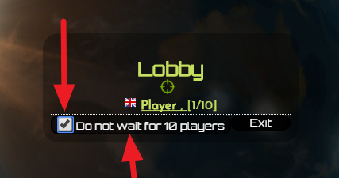
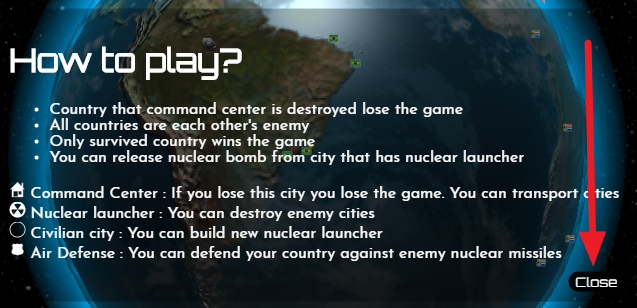

Nukewar Online
Taným : Küresel dünya
üzerinde geçen amiral battý tarzý bir gerçek
zamanlý browser tabanlý online oyundur.
Tema : Nükleer savaþ, balistik füzeler, nükleer
kýyamet, 3. dünya savaþý
Fayda : Stratejik düþünme ve zaman yönetim
yeteneðinin arttýrýlmasý , politik iþbirliðinin geliþtirilmesi,
dünyanýn küreselliðinin tehayyülü, nükleer
savaþýnýn zararlarýnýn anlatýlmasý
Taraflar : Her ülke ayrý bir taraftýr ve bir oyuncu
ile kontrol edilir. 10 (on) ülke vardýr. Bütün ülkeler
birbirine düþmandýr.
Kazanma þartý : Bütün rakipleri komuta merkezi
bulunan þehirleri bombalayarak yen.
Kaybetme durumu: Komuta merkezi olan þehrin bombalanmasý.
Oyuncular ve botlar: En az 1 oyuncu 9 bot. En fazla 10
oyuncu.
Kontrol : Mouse ( , Klayve [ Mesajlaþmak için]
)
Oynayýþ
nukewar.online
adresine tarayýcýnýzdan giriniz.
Bir takma ad
seçip "oyna" butonuna basýnýz.

Oyun 10 oyuncu
lobide olduðunda otomatik baþlayacaktýr.
"10 oyuncuyu
beklemeden baþla" butona basarak, beklemek istemeyenlerle
beraber, botlarýnda olduðu bir oyun baþlatabilirsiniz.

Oyun 15 saniye
içinde baþlar. O süre zarfýnda "Nasýl oynanýr,
kýsmýný okuyabilirsiniz"

Kontroller

Þehir seçme
Hamle yapmak / Ýptal etmek
Roket rakibi
Ýzleme panelinden
size gelen roketleri veya gönderilen roketleri görebilirsiniz.
Gidiþ/Geliþ zamanýnýn üzerine týklayarak, rokete
odaklanabilirsiniz.
Bir þehre
týklayarak, kontrol panelinden o þehre gelen/giden roketleri
görebilirsiniz.
Mesaj yazmak

Hamleler
Þehirleri yer
deðiþtirme - taþýma (swap) : 1 dk (Þehirlerdeki varlýklarý
deðiþtirir.)
Nükleer
Füze fýrlatmak - Yeniden doldurma : 100sn (Bombalanmamýþ
düþman þehrine füze fýrlatýlabilir)
Ýnþa
(Nükleer Rampa veya Hava Savunmasý): 80sn (Þehrin sivil olmasý
gerekli)
Þehir Onarma:
20sn (Þehrin bombalanmýþ olmasý gerekli)
Þehir Tipleri
Sivil Þehir : Bu þehire roket
rampasý veya hava savunmasý inþa edilebilir.
Komuta Merkezi : Bu þehir bombalanýrsa oyun kaybedilir.
Roket Rampasý : Bu þehirden düþman þehirlerine roket
gönderilebilir.
Hava savunmasý : Ülkenizdeki herhangi bir þehre gelen
düþman roketini vurarak, þehirlerinizi korur.
Kurallar
Çok oyuncu
veya bot ile oynanýr. Zaman tabanlý strateji oyunudur
Ülkeler, 5
þehre sahip olur.
Ülkeler 1
komuta merkezi ve 1 nükleer silaha sahip baþlar.
Komuta merkezi
vurulursa oyun kaybedilir.
Bütün
ülkeler düþmandýr
Hayatta kalan
ülke oyunu kazanýr
Nükleer
silah vurulursa , yenisini inþaa etmek zorunda kalýr.
Uzaða atýlan
nükleer daha hedefi geç yok edecektir.
Her el komuta
merkezi ve nükleer silahýn yerini deðiþtirebilir. Nükleer
olarak vurulmuþ yeri seçemez.
Yeni nükleer
silah ve hava savunmasý inþa edilebilir.
Bot (Yapay zeka)
Sürekli saldýran bir yapay zekadýr.
Saldýr -> Nükleer rampa yoksa ve müsaitse inþa et
Saldýr -> Düþman seç(en az þehri olanlardan
rastgele) -> Düþman kaybetmediyse
Saldýr -> Herhangi bir bombalanmamýþ düþman þehrine
rastgele roket fýrlat.
Mesajlar
The
first atomic bomb was dropped on Japan. 220000 dead. :
Ýlk
atom bombasý japonyaya atýldý ve 220 bin kiþi öldü,
The largest
nuclear bomb ever detonated, the Tsar Bomba, was 1,400
times more powerful than Hiroshima and Nagasaki
combined. :
En
büyük nükleer bomba olan Tsar bombasý, Hiroþima ve
Nagazakiye atýlýn iki bombadan 1400 kat daha güçlüdür.,
The
temperatures near the site of the bomb blast during the Hiroshima
explosion were estimated to be 300,000°C (540,000°F).
That’s 300 times hotter than the temperature bodies are
cremated at. :
Hiroþima
bombasýnýn atýldýðý yerdeki ortalama sýcaklýk 300,000°C (540,000°F)
civarýdýr. Bu insan vucudunu kül edecek sýcaklýktan 300 kat daha
fazladýr.,
In
nuclear war all men are cremated equal. -Dexter Gordon :
Nükleer
savaþta her insan eþit olarak kül olur. -Dexter Gordon,
There
are two problems for our species’ survival – nuclear war
and environmental catastrophe – and we’re hurtling
towards them. Knowingly. -Noam Chomsky :
Türümüzün
devamýna karþý iki problem vardýr. Nükleer savaþ ve doða
felaketleri. Buna karþýn bilerek hunharca sonumuzu hazýrlamaktayýz.
-Noam Chomsk,
One
nuclear war is going to be the last nuclear – the last war,
frankly, if it really gets out of hand. And I just don’t think
we ought to be prepared to accept that sort of thing. -Lawrence
Eagleburger :
Bir
nükleer savaþ, son savaþýmýz olabilir. Bu bizim elimizde.
-Lawrence Eagleburger,
Life
on Earth is at the ever-increasing risk of being wiped out by a
disaster, such as sudden global nuclear war, a genetically engineered
virus or other dangers we have not yet thought of. -Stephen Hawking :
Dünya
üzerindeki hayat, nükleer savaþ, biyolojik savaþ ve daha
bilmediðimiz bir çok þey ile git gide artan risk altýndadýr.
-Stephen Hawking,
Oyun
sonu mesajý :
If
this war actually was real, we would have lost all the world because
of radiation and nuclear winter…
Eðer
bu savaþ gerçekten yaþansaydý, bütün dünyayý
radyasyon ve nükleer kýþ sebebiyle kaybetmiþtik…